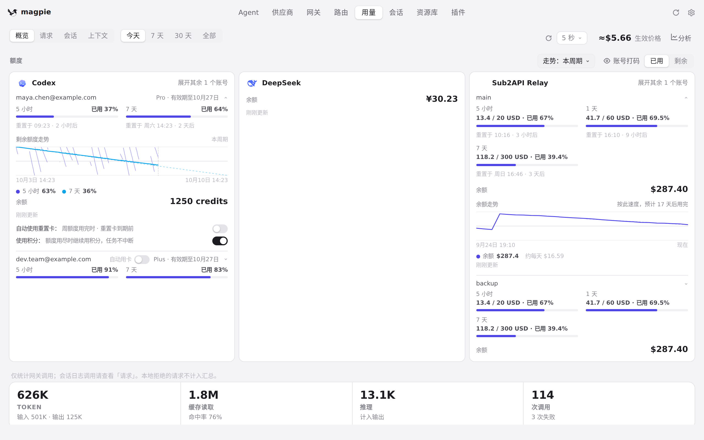
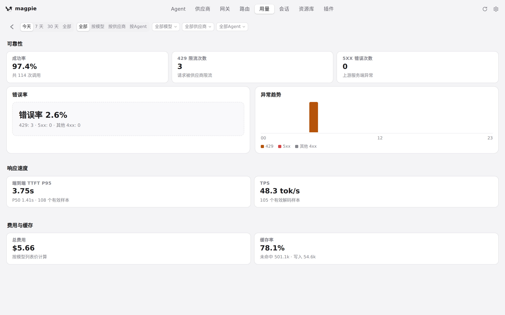
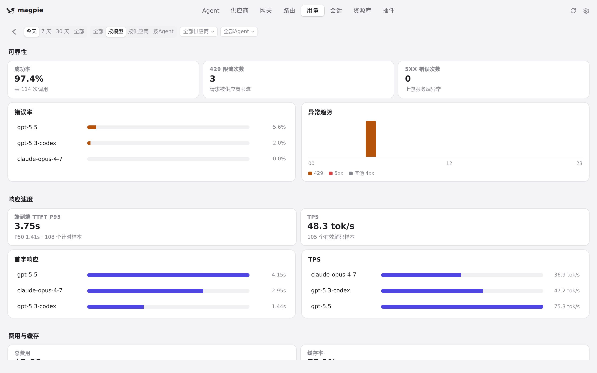
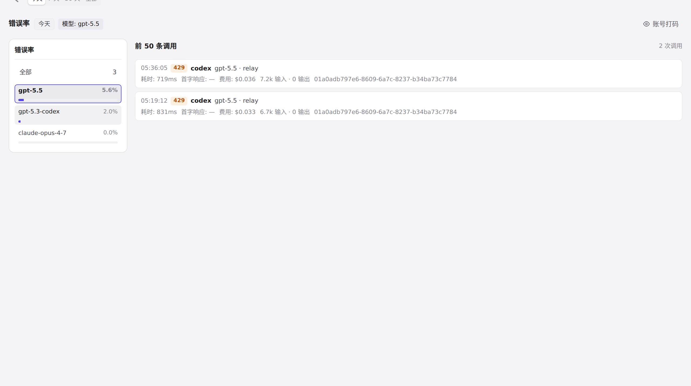
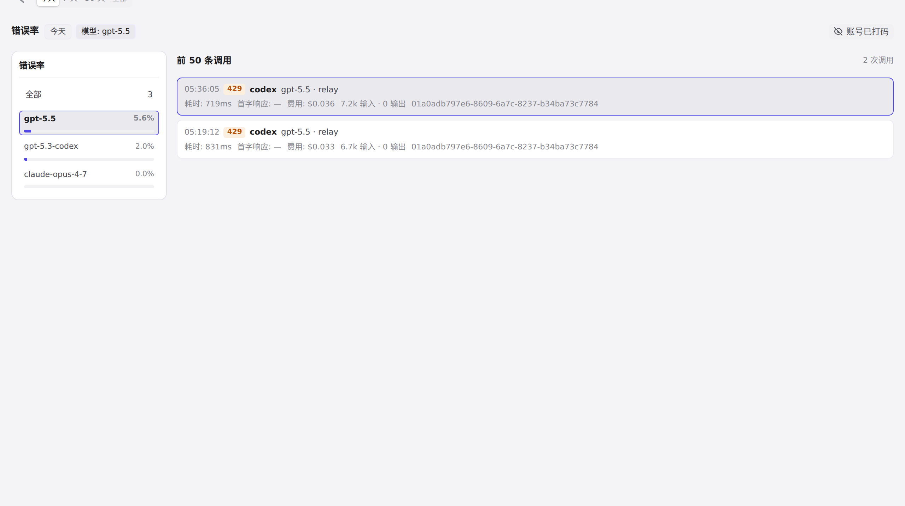

#704 界面预览
commit d53602a · 回到 PR · 在用量页顶部新增「分析」入口，打开新的质量与分析看板：可按今天/7天/30天/全部与全部/按模型/按供应商/按Agent维度查看错误率、异常趋势、TTFT、TPS、成本与缓存率，并可点击排行或 KPI 下钻到调用列表、在同一页右侧内联查看某条调用的路由过程。账号打码也扩展到分析页（含 title 与 aria-label），并新增下钻页的「隐藏账号」按钮。
红线是鼠标走过的轨迹，红色圆环是一次点击；底部文字是这一步在做什么。空格暂停，← → 逐段查看。

用量页入口与分析看板 · 用量页顶部新增的「分析」入口

用量页入口与分析看板 · 打开后的分析看板：周期、维度、筛选与可靠性指标
 用量页入口与分析看板 · 向下滚动看到的响应速度与费用、缓存指标
用量页入口与分析看板 · 向下滚动看到的响应速度与费用、缓存指标

用量页入口与分析看板 · 按模型维度的排行图表

下钻页、调用路由与账号打码 · 下钻页：左侧紧凑排行，右侧按该指标排序的调用
下钻页、调用路由与账号打码 · 同一页右侧显示这条调用的路由过程

下钻页、调用路由与账号打码 · 下钻页上的「隐藏账号」按钮